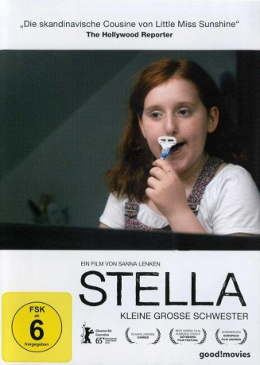

#6830 Stella
 
 IMDB-Wertung: 6.8 / 10
IMDB-Wertung: 6.8 / 10  Metascore: 0
Metascore: 0 
Die 12jährige Stella steckt mitten in der Pubertät, sie kämpft mit Selbstzweifeln, verliert sich in Tagträumen, ist in ihren Eiskunstlauflehrer Jakob verliebt und weiß nicht wie sie es ihm sagen soll. Aber ein anderes Problem wiegt sehr viel schwerer: Stellas Schwester Katja, eine begabte Eiskunstläuferin, ihr großes Vorbild, hat ein Geheimnis: Sie ist magersüchtig. Stella merkt schnell, dass irgendetwas mit ihrer Schwester nicht stimmt und möchte sich den Eltern mitteilen, doch Katja zwingt sie zu schweigen. Langsam beginnt Katjas Krankheit die Familie zu spalten. Eine Geschichte über das Heranwachsen, Liebe, Vertrauen und Verrat – liebevoll und leicht erzählt mit großartigen Jungdarstellern.
Jahr: 2015
Dauer: 94 Minuten
FSK: 6
Land: Schweden Studio: Camino FilmverleihTonspuren:
Untertitel:
Auflösung: 720p (1280x536) Größe: 2293 MB
Genre: Drama
Regisseur: Sanna Lenken
Drehbuch: Ángel Agudo
Soundtrack:
Darsteller:
 Henrik Norlén als Lasse
Henrik Norlén als Lasse Annika Hallin als Karin
Annika Hallin als Karin Maxim Mehmet als Jacob
Maxim Mehmet als Jacob- Bahador Foladi als Cafébiträde
- Rebecka Josephson als Stella
- Amy Diamond als Katja
- Emelie Strömberg als Konståkningstränare
- Ellen Lindbom als Iga
- Karin de Frumerie als Lärare
- Hugo Wijk als Henrik
- Noam Asseraf als Andres
- Elisabeth Callejas als Läkare
- Åsa Janson als Skolsköterska
- Venessa Koohnavard als Ice skater
- Julia Marko-Nord als Sköterska
Datei: X:\2015(N-Z)\Stella (2015, FSK6, 1280x536).mkv seit 30.08.2017
Festplatte: HD 2015(A-Z)
 Es gibt insgesamt 161 Filme in der Gruppe '2015(N-Z)'
Es gibt insgesamt 161 Filme in der Gruppe '2015(N-Z)'